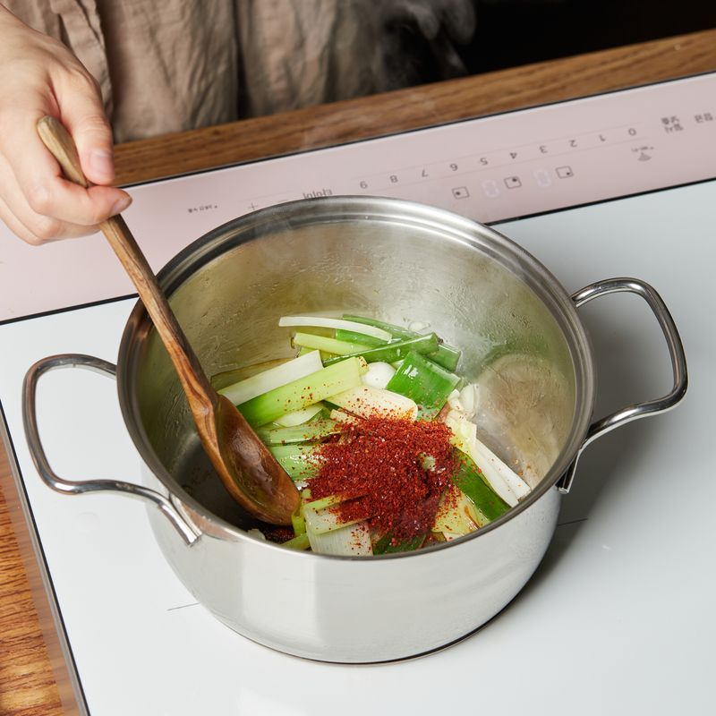

-
대파는 5cm 길이로 잘라 반으로 갈라주세요. 당면은 30분간 불려주세요.
-
고추는 송송 썰고 마늘은 굵게 다져주세요.
-

냄비에 식용유를 두르고 대파를 넣어 5단에서 3분 30초간 볶아주세요.
-

고춧가루를 넣고 3단에서 1분간 볶아주세요. .
-
물과 수프를 넣고 9단에서 2분간 끓여주세요.
-
당면과 청양고추를 넣고 간장과 후추로 간을 해 9단에서 3분간 끓여주세요.
-
달걀을 풀어 넣고 9단에서 30초 끓인 후 불을 꺼주세요.
-
완성된 육개장을 그릇에 담아 밥과 함께 즐겨주세요.